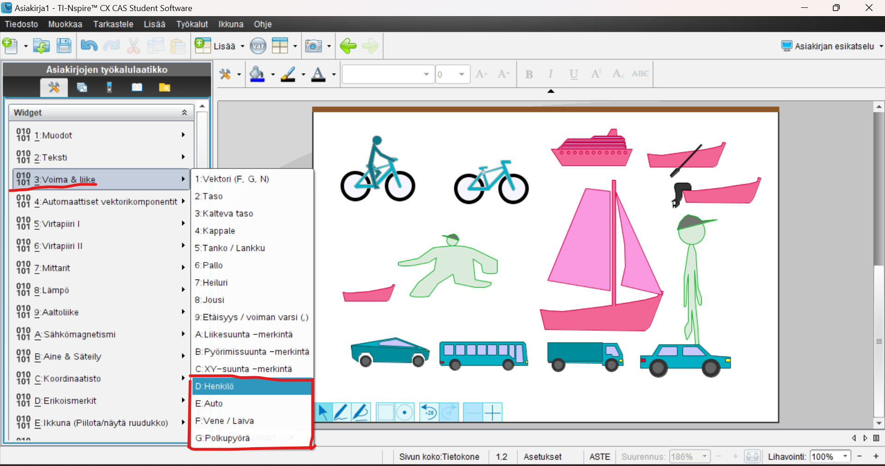
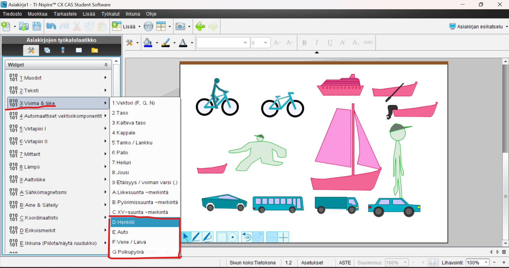

Tällä sivulla olen kerännyt kaikkia hauskoja NSpire widget-juttuja, joilla voi leikkiä vaikka ruotsin tunnilla tai joita voi näyttää kaverille!
Tätä sivua päivitetään jatkuvasti uusien juttujen löytyessä.
Useamman widgetti-muodon väriä tai olemusta voi muuttaa nuolinäppäimillä. Tämän voi kokeilla koneen omilla nuolinäppäimillä.
Tämä ominaisuus joskus mahdollistaa sen, että näitä värejä tai olemuksia voi rämpätä läpi pitämällä nuolinäppäintä pohjassa.
Yksi hyvä esimerkki on kemia-widgetin keitinlasi, jonka litkun väriä voi muuttaa sateenkaarenväriseksi!
Fysiikka-widgetissä on pari harvoin käytettyä "muotoa", jotka ovat mielestäni liian aliarvostettuja. Ehkä te löydätte niille käyttöä!
 

Kuvissa on punaisella ympyröity kohdat, joista muotoja voi löytää.
Widgettimuotoja voi kopioida painamalla enteriä. Enteriä voi painaa pohjaan, joka mahdollistaa hauskoihin "taideteoksiin":

Go crazy! Luokaa uusi taidesuuntaus, NSpire-taide, jonka pointtina on NSpiressä tehty shitpostaus! Tässä mun HIENO esimerkki!

Tähän referenssikuva oli
Nettisivu made by a tylsistynyt abiturientti aka Meemitaikuri